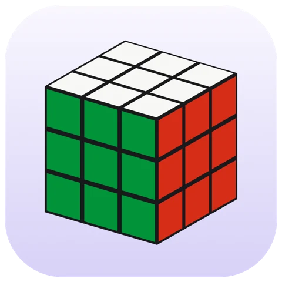

<!doctype html><html lang="zh-CN"><meta charset="utf-8"><meta name="viewport" content="width=device-width,initial-scale=1"><title>田田桌面搭子 · 网页演示</title><style>*{box-sizing:border-box}body{margin:0;background:#edf2e8;color:#355c53;font-family:-apple-system,'PingFang SC',sans-serif;min-height:100dvh;display:grid;place-items:center;text-align:center;padding:24px}main{max-width:480px}img{width:160px;height:160px;object-fit:contain;cursor:pointer}h1{font-size:24px}p{font-size:13px;line-height:1.8}button{min-height:44px;margin:5px;border:1px solid #a2b9a4;border-radius:8px;background:#fbf8ee;color:#355c53;font-size:14px;padding:10px 18px}output{display:block;font-size:40px;font-variant-numeric:tabular-nums;margin:18px}small{display:block;font-size:11px;color:#7d8e7e;line-height:1.8}</style><main><h1>田田桌面搭子</h1><p>点魔方打个招呼，也可以试一次计时。</p><button id="greet">打个招呼</button><output id="time">0.00 秒</output><button id="clock">开始计时</button><small>本页是手机网页演示。原作品为 macOS 桌面应用，支持的完整功能以原应用为准。</small></main><script>const pet=document.getElementById('pet'),clock=document.getElementById('clock'),time=document.getElementById('time');let start=0,running=false;function greet(){pet.animate([{transform:'translateY(0)'},{transform:'translateY(-15px) rotate(-8deg)'},{transform:'translateY(0)'}],{duration:450})}document.getElementById('greet').onclick=pet.onclick=greet;clock.onclick=()=>{running=!running;if(running)start=performance.now();clock.textContent=running?'停止计时':'重新计时'};function tick(){if(running)time.textContent=((performance.now()-start)/1000).toFixed(2)+' 秒';requestAnimationFrame(tick)}tick()</script></html>
